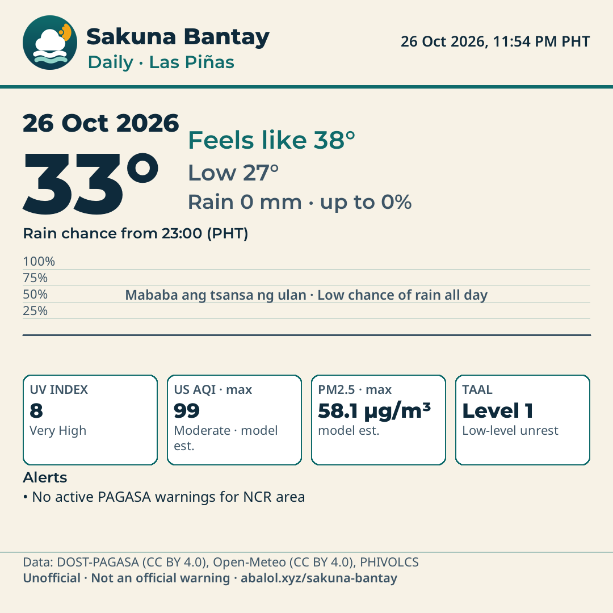

Today · Las Piñas

Las Piñas — 2026-11-01
Taglish: Init hanggang 32°C, feels like 37°C. Mataas ang tsansa ng ulan (hanggang 100%). Magdala ng payong kung aalis.
EN: Up to 32°C, feels like 37°C. Likely rain (up to 100%). Bring an umbrella if heading out. UV High (7.0). AQI (US, max) 32 (Good · model estimate).
JP: 最高32°C、体感37°C。雨の可能性が高いです（最大100%）。お出かけの際は傘をお持ちください。 UV High、AQI（最大）32。
Taal status unavailable.
NCR: no signal
Active alerts
- General Flood Advisory (Final) — General Flood Advisory (Final)